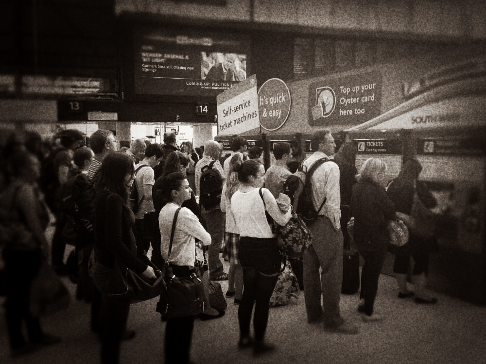

As we've talked about, there are two facets of mindfulness. Conscious awareness is one. The second is the art of allowing. In this context, it is not about accepting things in the external world, but about accepting things in our internal world. This is because it's our inner world that gets affected by our external world.
Think about an animal that you fear. If you were to see it, it would have a direct impact upon your inner world. And, with mindfulness, this is where the 'fine tuning' can take place, should we choose this. This doesn’t imply a liking or a wanting of this fear, but rather, a letting be. Allowing is the essence of mindfulness. I'm reiterating this point because we all need to be reminded of this sometimes. This is not something we just tick the box for.
This applies to me as well. Today, I had to remind myself about this when I was caught up in a queue at the ATM. I was really late to catch up with a friend but needed to get some money out first. I became absorbed in my frustration at how slowly the queue was moving, but more importantly, because my friend had already told me that she knew that I'd be late (I'm not the best time keeper!).

You know when you think that the person using the cash machine in front of you has finally finished, but they end up getting out another card and using it again? It was getting later and later and I was feeling really annoyed with this person. And then I noticed what was going on for me.I'm writing this because I've noticed that my morning practice of mindfulness helps me in situations like this. It helps me notice these patterns sooner, and opens me up to allowing space for frustration and all the thoughts that come with this.
Allowing means changing the relationship that we have with our unwanted inner experiences without changing the experiences themselves.
So in the context of unwanted feelings, this is never about trying to change them. It’s about the relationship we have to them. This is based on the fact that whenever we resist our unwanted inner experiences, we give them more power.
I just said fact then, didn’t I?
That’s a typo! Don't take what I’m saying here as fact. Always check in with your experience with life first. This is where your truth is. Anyway, let's get back to this.
Maybe recall a time when you had an unwanted feeling and you really wanted it to go away. Anxiety is always a good example for this. What happens when you resist anxiety? It doesn't go away and it can get worse, right? The inner struggle with this feeling makes it a bigger problem. So what can we do about this inner resistance?
Yes. Go on Eckhart! This quote may sound a little out there. But in this context, it can simply mean that inner resistance imprisons us. Why? Because we're caught up in a struggle. And this, of course, can include our unwanted feelings like anxiety. Through non-resistance, they can be free to be. They might not be exactly as we’d prefer, but we can make space for the discomfort. In doing so, we not only take responsibility for our feelings, but we begin the process of transforming our inner world. I'm not exaggerating here. This is exactly what happens with practice. And the more we do this, the more likely we are to appreciate this freedom and flexibility.